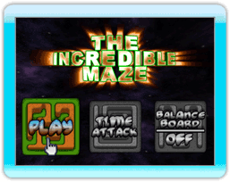

5 |
Getting Started |
 |
 Welcome to The Incredible Maze! You'll get to play through many exciting levels with all sorts of obstacles and challenges. Think it's too easy? Think again! Obstacles, springs, teleporters and missing walls are just the start -- Just make sure you keep a steady hand or you'll be falling off the edge!
Main Menu
Play: Selecting the "Play" option will allow you to get playing through the mazes right away. If this is your first time playing you'll notice that your only option is "Play" on the level called "Starting Off". As you complete levels they will be unlocked for future gameplay.
Time Attack: This mode will become unlocked when you complete all of the initial mazes in "Play" mode. Time Attack tasks you to complete all mazes in one sitting under a timed limit. See if you can beat this mode in as few "Attempts" as possible to achieve a High Score.
Wii Balance Board: If you own a Wii Balance Board you can play "The Incredible Maze" by shifting your weight different directions to steer the ball rather than moving your Wii Remote. This option allows you to toggle this function "ON/OFF" before beginning any game. |
 |
 |
 |